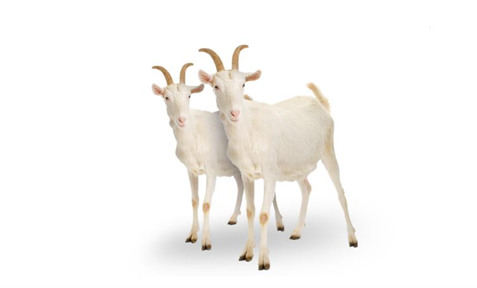

Desalegn lives in Ethiopia. Desalegn’s mum and dad were struggling to feed their children and they had no livestock to give them food or money. But then, after receiving help from Save the Children's livelihoods project, including two goats, the family celebrated – they could finally look forward to a much better standard of living.
Photo: Colin Crowley / Save the Children

Two goats can give a family milk, meat, and an income. The adult goats will breed and the baby goats will fetch a good price at market, bringing in enough money to send the kids to school (the human kids, not all those baby goats).
This gift represents a donation to our hunger reduction work and could help provide a family with a livelihood.
SOURCE: SAVE THE CHILDREN
SAVE THE CHILDREN: WISHLIST